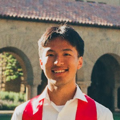

|

|
🎨 About MeHi! I'm Benjamin Yan (颜斌), a co-term MS student in computer science (AI track) at Stanford University. I recently graduated from Stanford with BSs in computer science and mathematics, and a minor in creative writing. At Stanford University, I teach CS 106S (cs106s.stanford.edu), work as a SUMO Tutor for the Math Department (MATH 18-21,51), and am involved with CS + Social Good, Math Organization, and Stanford & Golden Gate SciOly. During the 2024 winter term, I was in the United Kingdom as a visiting student at University of Oxford, Brasenose College, completing an intensive creative writing tutorial in short stories and poetry. In 2020, I was named a U.S. Presidential Scholar, awarded to 161 graduating seniors nationwide. I've been a SWE intern at NVIDIA, and have been involved with ML research in Prof. Jure Leskovec's Stanford Network Analysis Project (SNAP) Group, Prof. Andrew Ng's Stanford ML Group, the Stanford NLP Group, Prof. Diyi Yang's Stanford Social and Language Technologies (SALT) Lab, and Prof. Pranav Rajpurkar's Lab at Harvard Medical School—with a first-author paper publication at EMNLP, one of the leading conferences in natural language processing (NLP) research. My research interests include (1) AI & NLP for social good, (2) multimodal & temporal representation learning on real-world graph data, and (3) ML for climate change. This summer, I'm working as a graduate ML research intern in the Climate & Ecosystems Division of Lawrence Berkeley National Lab (LBNL), a US Department of Energy laboratory. In my free time, I enjoy watching anime, exploring the Oxford English Dictionary, and trying to learn Japanese. Email: bbyan [at] stanford [dot] edu ✏️ Featured Works📝 Publications† indicates equal senior authorship Style-Aware Radiology Report Generation with RadGraph and Few-Shot Prompting EMNLP 2023 (Findings, Long Papers) Yan, B., Liu, R., Kuo, D.E., Adithan, S., Reis, E.P., Kwak, S., Venugopal, V.K., O’Connell, C.P., Saenz, A., Rajpurkar, P.† , Moor, M.† Learning production functions for supply chains with graph neural networks Under review, 2024 Chang, S., Lin, Z., Yan, B., Bembde, S., Xiu, Q., Wong C.H., Qin, Y., Kloster, F., Luo, A., Palleti, R., Leskovec, J. MRI Brain Tumor Segmentation Using Deep Encoder-Decoder Convolutional Neural Networks MICCAI International BrainLesion Workshop (Conference Paper), 2021 Yan, B.B., Wei Y., Jagtap, J.M.M,. Moassefi, M., Garcia D.V.V., Singh Y., Vahdati S., Faghani, S., Erickson, B.J., Conte, G.M. 🖼️ PresentationsStyle-Aware Radiology Report Generation with RadGraph and Few-Shot Prompting EMNLP Main Conference, December 2023, Singapore Percolation, Phase Transitions, and Global Connectivity in Lattices Stanford Math Directed Reading Program (DRP) Colloquium, June 2023, Stanford CA 🌈 Creative WritingWhat makes a light bisexual (poem) Stanford English and Creative Writing Senior Anthology, June 2024 Twin Prime Conjecture (novel manuscript) A 94,000-word/320-page work of Y.A. fiction written entirely in one month for NaNoWriMo, Nov 2023 📚 My Bookshelf
🎥 Movies and Anime I Love
|
© Benjamin Yan 2024. Powered by homemade HTML.